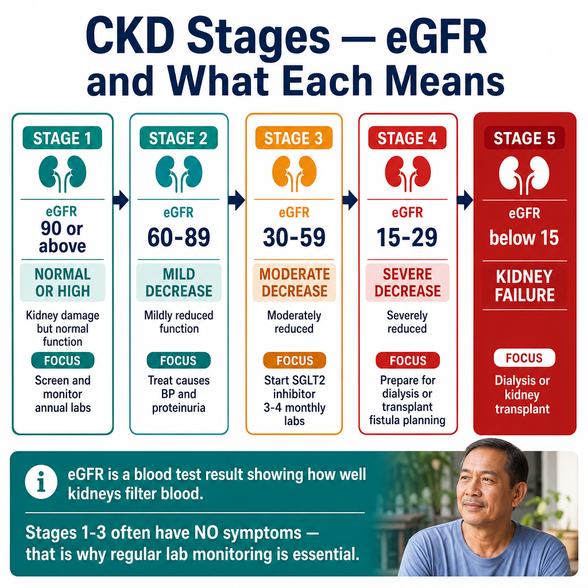
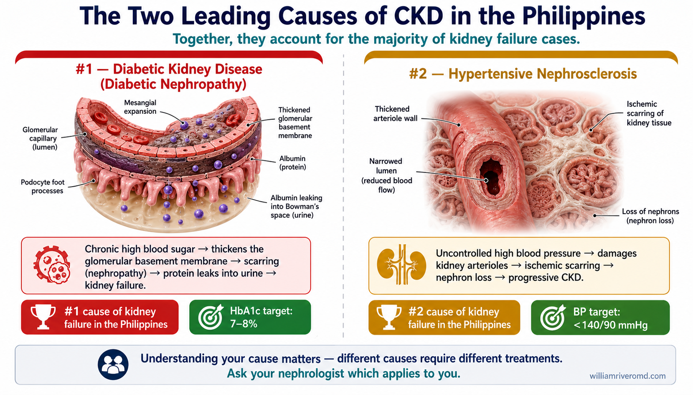
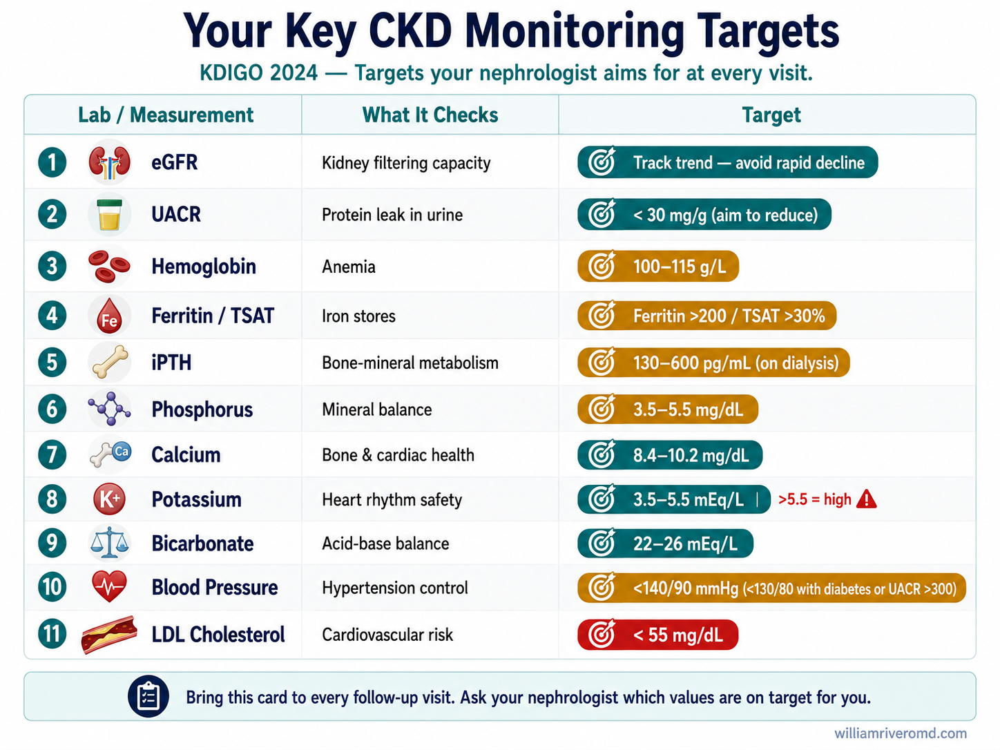
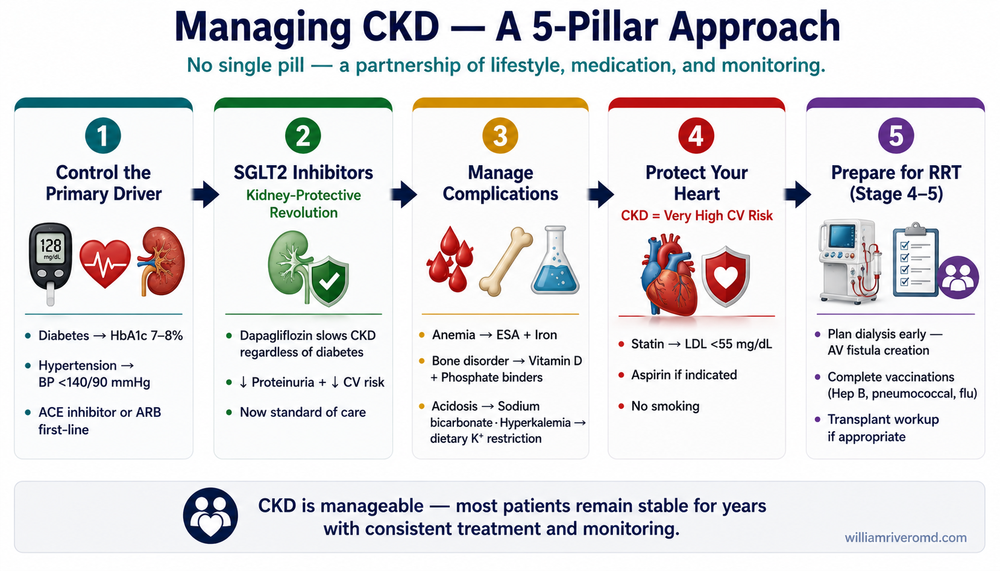

What is Chronic Kidney Disease?Ano ang Talamak na Sakit sa Bato?Unsa ang Kronikal nga Sakit sa Kidney?Ano ing Talamak na Sakit sa Batu?
Your kidneys filter 200 liters of blood every day — removing waste, regulating blood pressure, balancing electrolytes, and producing hormones that control red blood cell production and bone health. CKD means this filtering capacity is gradually, and sometimes silently, declining.Sinasala ng inyong mga bato ang 200 litro ng dugo bawat araw — inaalis ang basura, kinokontrol ang presyon ng dugo, pinananatiling balanse ang mga electrolyte, at gumagawa ng mga hormone na kumokontrol sa produksyon ng pulang selula ng dugo at kalusugan ng buto. Ang CKD ay nangangahulugang ang kakayahang ito sa pagsala ay unti-unti, at minsan ay tahimik, bumababa.Ang inyong mga kidney nagsala sa 200 litro nga dugo matag adlaw — nagkuha sa basura, nagkontrol sa presyon sa dugo, nagbalanse sa mga electrolyte, ug nagbuhat sa mga hormone nga nagkontrol sa produksyon sa pulang selula sa dugo ug kahimsog sa bukog. Ang CKD nagpasabut nga kini nga kakayahan sa pagsala hinay-hinay, ug usahay hilom, nagkunhod.Sinasala ning inyong dening batu ing 200 litro nining daya bawat aldo — inaalis ing basura, kinokontrol ining presyon nining daya, pinananatiling balanse deng electrolyte, at gumagawa ning deng hormone na kumokontrol sa produksyon ning pulang selula nining daya at kalusugan ning buto. Ing CKD ya nangangahulugang ing kakayahang ini sa pagsala ya unti-unti, at misan ya tahimik, bumababa.
CKD is defined as kidney damage or reduced kidney function lasting three months or more. It is diagnosed through blood tests, urine tests, and imaging — not just how you feel. Many people with early CKD feel completely normal.Ang CKD ay tinukoy bilang pinsala sa bato o nabawasang paggana ng bato na tumatagal nang tatlong buwan o higit pa. Ito ay nasusuri sa pamamagitan ng mga pagsusuri sa dugo, ihi, at imaging — hindi lamang kung paano kayo nararamdaman. Maraming tao na may maagang CKD ang nakakaramdam ng ganap na normal.Ang CKD gihubit ingon kadaot sa kidney o nabawasan nga pagtrabaho sa kidney nga molungtad tulo ka bulan o labaw pa. Kini nasusuri pinaagi sa mga pagsusuri sa dugo, ihi, ug imaging — dili lang kung unsay gibati ninyo. Daghang tawo nga adunay sayo nga CKD nakaramdam nga hingpit nga normal.Ing CKD ya tinukoy bilang pinsala sa batu o nabawasang paggana nining batu na tumatagal nang tatloning bulan o higit pa. Ini ya nasusuri sa pamamagitan ning deng pagsusuri sa daya, ihi, at imaging — ali lamang nung paano kayu nararamdaman. Maraming tao na may maagang CKD ing nakakaramdam ning ganap na normal.
The key measure is your eGFR (estimated Glomerular Filtration Rate) — think of it as a percentage of your kidney's filtering capacity. A healthy eGFR is above 90. CKD progresses through 5 stages based on this number.Ang pangunahing sukatan ay ang inyong eGFR (estimated Glomerular Filtration Rate) — isipin ito bilang porsyento ng kakayahan ng inyong bato sa pagsala. Ang malusog na eGFR ay nasa itaas ng 90. Ang CKD ay umuusad sa 5 yugto batay sa bilang na ito.Ang susi nga sukatan mao ang inyong eGFR (estimated Glomerular Filtration Rate) — hunahunaa kini ingon porsyento sa kakayahan sa pagsala sa inyong kidney. Ang maayong eGFR labaw sa 90. Ang CKD nag-uswag sa 5 ka yugto base sa numero nga kini.Ing pangunahing sukatan ya ing inyong eGFR (estimated Glomerular Filtration Rate) — isipin ini bilang porsyento ning kakayahan ning inyoning batu sa pagsala. Ing malusog na eGFR ya nasa itaas ning 90. Ing CKD ya umuusad sa 5 yugto batay sa bilang na ini.

Why "chronic"?Bakit "talamak"?Ngano "kronikal"?Bakit "talamak"?
Unlike acute kidney injury — which can recover — CKD represents structural changes to the kidney that are largely irreversible. The goal is to slow progression, not reverse it.Hindi tulad ng acute kidney injury — na maaaring gumaling — ang CKD ay kumakatawan sa mga istrukturang pagbabago sa bato na halos hindi na mababago. Ang layunin ay pabagalin ang pag-unlad, hindi baligtarin ito.Dili sama sa acute kidney injury — nga mahimong maulian — ang CKD nagrepresentar sa mga istrukturang pagbabago sa kidney nga halos dili na mababago. Ang tumong mao ang pagpabagal sa pag-uswag, dili ang pag-undo niini.Ali tulad ning acute kidney injury — na maaaring gumaling — ing CKD ya kumabangkî sa deng istrukturang pagbabago sa batu na halos ali na mababago. Ing layunin ya pabagalin ing pag-unlad, ali baligtarin ini.
How common is it?Gaano ito karaniwan?Unsa ka sagad kini?Gaano ini karaniwan?
Approximately 1 in 10 Filipinos has CKD. Most cases are driven by diabetes and hypertension — both of which damage the delicate filtering units (glomeruli) over time.Humigit-kumulang 1 sa bawat 10 na Pilipino ay may CKD. Karamihan sa mga kaso ay dulot ng diabetes at hypertension — parehong nagpapasama sa mga maselang yunit ng pagsala (glomeruli) sa paglipas ng panahon.Mga 1 sa 10 ka Pilipino adunay CKD. Kadaghanan sa mga kaso gidala sa diabetes ug hypertension — pareho nagdaot sa mga malumo nga yunit sa pagsala (glomeruli) sa paglabay sa panahon.Humigit-kumulang 1 king bawat 10 na Pilipino ya may CKD. Karamihan sa deng kaso ya dulot ning diabetes at hypertension — parehong nagpapasama sa deng maselang yunit ning pagsala (glomeruli) sa paglipas ning panahon.
The kidney-heart connectionAng ugnayan ng bato at pusoAng koneksyon sa kidney ug pusoIng ugnayan nining batu at pusu
Kidney disease and heart disease are deeply linked. Damaged kidneys raise blood pressure, worsen anemia, and promote inflammation — all of which strain the heart. This is why your nephrologist pays close attention to your blood pressure, cholesterol, and heart health simultaneously.Ang sakit sa bato at sakit sa puso ay malalim na magkaugnay. Ang nasirang bato ay nagpapataas ng presyon ng dugo, nagpapalala ng anemia, at nagtataguyod ng pamamaga — lahat ng ito ay nagpapabigat sa puso. Kaya naman ang inyong nephrologist ay nagbibigay ng malapit na pansin sa inyong presyon ng dugo, kolesterol, at kalusugan ng puso nang sabay-sabay.Ang sakit sa kidney ug sakit sa puso lawom nga magkaugnay. Ang nadaot nga kidney nagpataas sa presyon sa dugo, nagpagrabe sa anemia, ug nagpalambo sa implamasyon — tanan niini nagpasakit sa puso. Mao kini ang hinungdan nga ang inyong nephrologist naghatag ug duol nga pagtagad sa inyong presyon sa dugo, kolesterol, ug kahimsog sa puso sabay-sabay.Ining sakit sa batu at sakit sa pusu ya malalim na magkaugnay. Ing nasiraning batu ya nagpapataas nining presyon nining daya, nagpapalala ning anemia, at nagtataguyod ning pamamaga — lahat ning ini ya nagpapabigat sa pusu. Kaya naman ing inyong nephrologist ya nagbibigay ning malapit na pansin sa inyoning presyon nining daya, kolesterol, at kalusugan nining pusu nang sabay-sabay.
The 5 Stages of CKDAng 5 Yugto ng CKDAng 5 ka Yugto sa CKDIng 5 Yugto ning CKD
CKD is classified by eGFR (mL/min/1.73m²) and albuminuria (protein in urine). Knowing your stage helps guide how often you need labs, what treatments apply, and when referral to a specialist is needed.Ang CKD ay inuri ayon sa eGFR (mL/min/1.73m²) at albuminuria (protina sa ihi). Ang pagkaalam ng inyong yugto ay tumutulong na gabayan kung gaano kadalas kailangan ng mga pagsusuri, kung anong mga paggamot ang naaangkop, at kung kailan kailangan ang referral sa espesyalista.Ang CKD giurong ayon sa eGFR (mL/min/1.73m²) ug albuminuria (protina sa ihi). Ang pagkahibalo sa inyong yugto nagtabang sa paggiya kung unsa kadalas kinahanglan ang mga pagsusuri, kung unsang mga pagtambal ang angay, ug kung kanus-a kinahanglan ang referral sa espesyalista.Ing CKD ya inuri ayon sa eGFR (mL/min/1.73m²) at albuminuria (protina sa ihi). Ing pagkaalam ning inyong yugto ya tumutulong na gabayan nung gaano kadalas kailangan ning deng pagsusuri, nung anong deng paggamut ing naaangkop, at nung kailan kailangan ing referral sa espesyalista.

Each stage below shows three layers of what's happening inside your kidney:Ang bawat yugto sa ibaba ay nagpapakita ng tatlong antas ng nangyayari sa loob ng inyong bato:Ang matag yugto sa ubos nagpakita sa tulo ka layer sa nahitabo sa sulod sa inyong kidney:Ing balang yugto sa lalam ya nagpapakita ning atlong antas ning nangyayari king loob ning inyong batu:
- 🧬 Anatomical findingsAnatomikong nakikitaAnatomikong nakit-anAnatomikong nakikita — the structural changes in the kidney itself.ang mga pagbabago sa istruktura ng bato.ang mga pagbag-o sa istruktura sa kidney.ing deng pagbabago king istruktura ning batu.
- ⚙️ Physiological functionPisyolohikong pagganaPisyolohikong pagtrabahoPisyolohikong paggana — how filtration, hormones, fluid, and electrolyte balance are affected.paano apektado ang pagsala, hormone, likido, at balanse ng electrolyte.unsaon pag-apekto sa pagsala, hormone, likido, ug balanse sa electrolyte.paano apektado ing pagsala, hormone, likido, at balanse ning electrolyte.
- 🩺 Clinical findingsKlinikal na nakikitaKlinikal nga makitaKlinikal a nakikita — the symptoms, lab signals, and management priorities your doctor watches for.ang mga sintomas, signal sa lab, at priyoridad sa pamamahala na binabantayan ng inyong doktor.ang mga sintomas, signal sa lab, ug prayoridad sa pagdumala nga gibantayan sa inyong doktor.ing deng sintomas, signal king lab, at priyoridad king pamamahala na binabantayan ning inyong doktor.
| StageYugtoYugtoYugto | 🧬 AnatomicalAnatomikoAnatomikoAnatomiko | ⚙️ PhysiologicalPisyolohikoPisyolohikoPisyolohiko | 🩺 ClinicalKlinikalKlinikalKlinikal |
|---|---|---|---|
| 1 Stage 1eGFR ≥ 90 mL/min/1.73m²~100% functional nephrons |
Kidneys look structurally intact on ultrasound — normal size, smooth cortex, intact medullary pyramids. On biopsy, focal microscopic damage may already be present: early glomerular changes (mesangial expansion, mild basement membrane thickening), small areas of fibrosis, or subtle podocyte injury, but the overall nephron mass is preserved.Mukhang buo pa ang bato sa ultrasound — normal ang laki, makinis ang cortex, buo ang medullary pyramids. Sa biopsy, maaaring may mga maliliit na pinsala na sa mikroskopyo: maagang pagbabago sa glomerulus, kaunting fibrosis, o banayad na pinsala sa podocyte, ngunit halos buo pa ang nephron mass.Mura'g hingpit ang kidney sa ultrasound — normal og gidak-on, hamis ang cortex, hingpit ang medullary pyramids. Sa biopsy, mahimong adunay gamay nga kadaot sa mikroskopyo na: sayo nga pagbag-o sa glomerulus, gamay nga fibrosis, o gamay nga kadaot sa podocyte, apan halos hingpit pa ang nephron mass.Mukhang buo pa ing batu king ultrasound — normal ing laki, makinis ing cortex, buo ing medullary pyramids. King biopsy, malyaring atin malating pinsala na king mikroskopyo: maagang pagbabago king glomerulus, kaunting fibrosis, o banayad a pinsala king podocyte, ngem halos buo pa ing nephron mass. | eGFR is still in the normal range, but surviving nephrons may already be hyperfiltering — working harder to compensate. Hormone production (erythropoietin, active vitamin D), acid-base regulation, and electrolyte balance are all intact. Concentration and dilution of urine are normal.Normal pa ang eGFR, ngunit ang natitirang nephrons ay maaaring nag-hyperfilter na — mas pinipilit gumana para makabawi. Buo pa ang produksyon ng hormone (erythropoietin, active vitamin D), regulasyon ng acid-base, at balanse ng electrolyte. Normal ang konsentrasyon at dilusyon ng ihi.Normal pa ang eGFR, apan ang nahibilin nga mga nephron mahimong nag-hyperfilter na — naningkamot pag-ayo aron makabalanse. Hingpit pa ang produksyon sa hormone (erythropoietin, active vitamin D), pagdumala sa acid-base, ug balanse sa electrolyte. Normal ang konsentrasyon ug dilusyon sa ihi.Normal pa ing eGFR, ngem ing natitirang nephrons malyaring nag-hyperfilter na — mas pinipilit gumana para makabawi. Buo pa ing produksyon ning hormone (erythropoietin, active vitamin D), regulasyon ning acid-base, at balanse ning electrolyte. Normal ing konsentrasyon at dilusyon ning ihi. | No symptoms. Diagnosed only when a damage marker shows up — most commonly albumin in the urine (UACR ≥ 30 mg/g), microscopic hematuria, or imaging/biopsy findings. Blood pressure may already be creeping up. Focus: identify and treat the cause (diabetes, hypertension), control BP, screen yearly with eGFR and UACR.Walang sintomas. Nadidiagnose lamang kapag may makita na palatandaan ng pinsala — kadalasan ay albumin sa ihi (UACR ≥ 30 mg/g), microscopic hematuria, o resulta ng imaging/biopsy. Maaaring nagsisimula nang tumaas ang presyon ng dugo. Layunin: tukuyin at gamutin ang sanhi (diabetes, hypertension), kontrolin ang BP, suriin taun-taon gamit ang eGFR at UACR.Walay sintomas. Madiagnose lamang kung adunay timailhan sa kadaot — sagad albumin sa ihi (UACR ≥ 30 mg/g), microscopic hematuria, o resulta sa imaging/biopsy. Mahimong nagsugod na sa pagtaas ang presyon sa dugo. Tumong: ilhon ug tambalan ang hinungdan (diabetes, hypertension), kontrolon ang BP, susihon kada tuig gamit ang eGFR ug UACR.Wala sintomas. Madiagnose lamang nung atin makita a tanda ning pinsala — kadalasan ya albumin king ihi (UACR ≥ 30 mg/g), microscopic hematuria, o resulta ning imaging/biopsy. Malyaring nagsisimulang tumaas ing presyon ning daya. Layunin: tukuyin at gamutin ing sanhi (diabetes, hypertension), kontrolin ing BP, suriin taun-taun king pamamagitan ning eGFR at UACR. |
| 2 Stage 2eGFR 60–89 mL/min/1.73m²~75% functional nephrons |
Kidneys still look normal or near-normal on ultrasound. Microscopically, mild nephron loss is established — surviving glomeruli enlarge (compensatory hypertrophy), early segmental glomerulosclerosis may appear, and subtle interstitial fibrosis is beginning. Cortical thickness is preserved.Mukhang normal pa rin ang bato sa ultrasound. Sa mikroskopyo, may bahagyang pagkawala na ng nephrons — lumalaki ang natitirang glomeruli (compensatory hypertrophy), maaaring magsimula ang segmental glomerulosclerosis, at unti-unting lumilitaw ang interstitial fibrosis. Buo pa ang kapal ng cortex.Mura'g normal pa ang kidney sa ultrasound. Sa mikroskopyo, adunay gamay nga pagkawala sa nephron — nagdako ang nabilin nga glomeruli (compensatory hypertrophy), mahimong magsugod ang segmental glomerulosclerosis, ug hinay-hinay nga interstitial fibrosis. Hingpit pa ang kabaga sa cortex.Mukhang normal pa ing batu king ultrasound. King mikroskopyo, atin bahagyang pagkawala na ning nephrons — lumalaki ing natitirang glomeruli (compensatory hypertrophy), malyaring magumpisa ing segmental glomerulosclerosis, at unti-unting lumilitaw ing interstitial fibrosis. Buo pa ing kapal ning cortex. | Filtration capacity is mildly reduced but enough surviving nephrons keep waste removal effective. Compensation by hyperfiltration in the remaining nephrons accelerates their own injury. Acid-base, potassium, and phosphate handling are still normal. Vitamin D activation begins to decline subtly.Bahagyang nabawasan ang kapasidad sa pagsala ngunit sapat pa rin ang natitirang nephrons para mabawasan ang basura. Ang compensation sa pamamagitan ng hyperfiltration ay nagpapabilis sa sariling pinsala ng natitirang nephrons. Normal pa ang acid-base, potassium, at phosphate. Bahagya nang bumababa ang activation ng vitamin D.Gamay nga nakunhuran ang kapasidad sa pagsala apan igo pa ang nabilin nga mga nephron aron makuha ang basura. Ang compensation pinaagi sa hyperfiltration nagpadali sa kaugalingong kadaot sa nabilin nga mga nephron. Normal pa ang acid-base, potassium, ug phosphate. Hinay-hinay nga nagkunhod ang activation sa vitamin D.Bahagyang nabawasan ing kapasidad king pagsala ngem sapat pa ing natitirang nephrons para mabawasan ing basura. Ing compensation king pamamagitan ning hyperfiltration ya nagpapabilis king sariling pinsala ning natitirang nephrons. Normal pa ing acid-base, potassium, at phosphate. Bahagya nang bumababa ing activation ning vitamin D. | Almost always asymptomatic. Routine labs may flag a rising creatinine or persistent proteinuria. Blood pressure often needs treatment. Focus: aggressive control of BP (target < 130/80) and glucose, ACE inhibitor or ARB if there is proteinuria, address weight and smoking, avoid NSAIDs and unnecessary contrast.Karamihan ay walang sintomas. Maaaring may tumataas na creatinine o tuloy-tuloy na proteinuria sa rutinang lab. Madalas nangangailangan ng paggamot ang BP. Layunin: mahigpit na kontrol ng BP (target < 130/80) at glucose, ACE inhibitor o ARB kung may proteinuria, ayusin ang timbang at paninigarilyo, iwasan ang NSAID at hindi kailangang contrast.Sagad walay sintomas. Mahimong adunay nagsaka nga creatinine o padayong proteinuria sa rutinang lab. Sagad nanginahanglan og pagtambal ang BP. Tumong: hugot nga pagkontrol sa BP (target < 130/80) ug glucose, ACE inhibitor o ARB kung adunay proteinuria, ayuhon ang gibug-aton ug panigarilyo, likayan ang NSAID ug dili kinahanglan nga contrast.Karamihan ya wala sintomas. Malyaring atin tumataas a creatinine o tuloy-tuloy a proteinuria king rutinang lab. Madalas nangangailangan ning paggamut ing BP. Layunin: mahigpit a kontrol ning BP (target < 130/80) at glucose, ACE inhibitor o ARB nung atin proteinuria, ayusin ing timbang at paninigarilyo, iwasan ing NSAID at ali kailangan a contrast. |
| 3a Stage 3aeGFR 45–59 mL/min/1.73m²~55% functional nephrons |
Ultrasound may now show mild cortical thinning. Microscopically, glomerulosclerosis is clearly established in patches, tubular atrophy is starting, and the interstitium is more fibrotic. The peritubular capillary network around the tubules begins to thin out.Maaaring magpakita ang ultrasound ng bahagyang pagnipis ng cortex. Sa mikroskopyo, malinaw na nakatatag ang glomerulosclerosis sa mga patches, nagsisimulang lumiit ang mga tubules (tubular atrophy), at mas may fibrosis ang interstitium. Nagsisimulang manipis ang peritubular capillary network.Mahimong magpakita ang ultrasound og gamay nga pagnipis sa cortex. Sa mikroskopyo, klaro na ang glomerulosclerosis sa mga patches, nagsugod na ang tubular atrophy, ug labi nang fibrotic ang interstitium. Nagsugod na nga nipis ang peritubular capillary network.Malyaring magpakita ing ultrasound ning bahagyang pagnipis ning cortex. King mikroskopyo, malinaw nang nakatatag ing glomerulosclerosis king deng patches, nagumpisang lumati ing deng tubules (tubular atrophy), at mas atin fibrosis ing interstitium. Nagumpisang manipis ing peritubular capillary network. | Concentration ability falls — nocturia (waking at night to urinate) may begin. PTH (parathyroid hormone) starts rising in response to subtle phosphate retention and early vitamin D deficiency. EPO production can begin to drop, planting the seeds of CKD-related anemia. Drug clearance is starting to slow.Bumababa ang abilidad sa konsentrasyon — maaaring magsimula ang nocturia (paggising sa gabi para umihi). Tumataas ang PTH (parathyroid hormone) bilang tugon sa bahagyang pagkaipon ng phosphate at maagang kakulangan ng vitamin D. Maaaring magsimulang bumaba ang produksyon ng EPO, simula ng CKD-related anemia. Bumabagal na ang paglabas ng gamot.Mokunhod ang abilidad sa konsentrasyon — mahimong magsugod ang nocturia (pagmata sa gabii aron mangihi). Magsugod nga mosaka ang PTH (parathyroid hormone) ingon tubag sa gamay nga pagtipig sa phosphate ug sayo nga kakulangon sa vitamin D. Mahimong magsugod nga mokunhod ang EPO, sinugdanan sa CKD-related anemia. Nahinay na ang pag-clear sa tambal.Bumababa ing abilidad king konsentrasyon — malyaring magumpisa ing nocturia (paggising king bengi para umihi). Tumataas ing PTH (parathyroid hormone) bilang tugon king bahagyang pagkaipon ning phosphate at maagang kakulangan ning vitamin D. Malyaring magumpisang bumaba ing produksyon ning EPO, umpisa ning CKD-related anemia. Bumabagal nang paglabas ning gamut. | Most patients still feel well; some report mild fatigue or nocturia. Labs widen — start screening hemoglobin, phosphate, PTH, and bicarbonate. Focus: ACEi/ARB if albuminuria, add SGLT2 inhibitor (proven to slow CKD progression), refine BP and diabetes control, fully avoid NSAIDs, immunizations up to date. Nephrology consultation if albuminuria is high or eGFR is dropping fast.Karamihan ay nararamdaman pa rin na maayos; iilan ang nag-uulat ng banayad na pagod o nocturia. Lumalawak ang lab — simulang suriin ang hemoglobin, phosphate, PTH, at bicarbonate. Layunin: ACEi/ARB kung may albuminuria, idagdag ang SGLT2 inhibitor (napatunayang nagpapabagal ng CKD progression), pinuhin ang kontrol ng BP at diyabetes, ganap na iwasan ang NSAID, kumpleto ang mga bakuna. Konsulta sa nephrology kung mataas ang albuminuria o mabilis na bumababa ang eGFR.Sagad sa mga pasyente nagmaayo gihapon; pipila nag-report og gamay nga kakapoy o nocturia. Mosanga ang lab — sugdan ang pagsusi sa hemoglobin, phosphate, PTH, ug bicarbonate. Tumong: ACEi/ARB kung adunay albuminuria, idugang ang SGLT2 inhibitor (napamatud-an nga nagpabagal sa CKD progression), pinuhon ang kontrol sa BP ug diabetes, hingpit nga likayan ang NSAID, kompleto ang mga bakuna. Konsulta sa nephrology kung taas ang albuminuria o paspas nga nagkunhod ang eGFR.Karamihan ya nararamdaman pa rin a maayos; iilan ing nag-uulat ning banayad a pagud o nocturia. Lumalawak ing lab — magumpisang suriin ing hemoglobin, phosphate, PTH, at bicarbonate. Layunin: ACEi/ARB nung atin albuminuria, idagdag ing SGLT2 inhibitor (napatunayang nagpapabagal ning CKD progression), pinuhin ing kontrol ning BP at diyabetes, ganap na iwasan ing NSAID, kumpleto ing deng bakuna. Konsulta king nephrology nung mataas ing albuminuria o mabilis a bumababa ing eGFR. |
| 3b Stage 3beGFR 30–44 mL/min/1.73m²~40% functional nephrons |
Ultrasound usually shows clear cortical thinning and increased echogenicity. Microscopically, glomerulosclerosis is widespread, tubular atrophy is prominent, the interstitium is densely fibrotic, and the peritubular capillary network is sparse. Multiple nephrons are lost permanently.Karaniwang nagpapakita na ang ultrasound ng malinaw na pagnipis ng cortex at mas maliwanag na echogenicity. Sa mikroskopyo, laganap na ang glomerulosclerosis, kapansin-pansin ang tubular atrophy, lubos na fibrotic ang interstitium, at kakaunti ang peritubular capillary network. Permanenteng nawawala ang maraming nephrons.Kasagaran nagpakita na ang ultrasound og klaro nga pagnipis sa cortex ug mas hayag nga echogenicity. Sa mikroskopyo, kaylap na ang glomerulosclerosis, klaro ang tubular atrophy, baga nga fibrotic ang interstitium, ug gamay na ang peritubular capillary network. Daghang nephrons ang permanente nga nawala.Karaniwang nagpapakita na ing ultrasound ning malinaw a pagnipis ning cortex at mas maliwanag a echogenicity. King mikroskopyo, laganap na ing glomerulosclerosis, kapansin-pansin ing tubular atrophy, lubos a fibrotic ing interstitium, at kakaunti ing peritubular capillary network. Permanenteng nawawala ing maraming nephrons. | CKD-related anemia (Hgb often < 12) sets in. Mineral-bone disorder worsens — phosphate rises, calcium falls, PTH climbs, 1,25-OH vitamin D drops. Metabolic acidosis is common (low bicarbonate). Salt and water handling become brittle — both volume overload and dehydration are easier to develop. Renal clearance of drugs is significantly reduced.Nagaganap na ang CKD-related anemia (Hgb madalas < 12). Lumalala ang mineral-bone disorder — tumataas ang phosphate, bumababa ang calcium, tumataas ang PTH, bumababa ang 1,25-OH vitamin D. Karaniwan ang metabolic acidosis (mababang bicarbonate). Nagiging marupok ang paghawak ng asin at tubig — mas madaling magkaroon ng volume overload o dehydration. Lubhang nabawasan ang renal clearance ng gamot.Nagsugod na ang CKD-related anemia (Hgb sagad < 12). Migrabe ang mineral-bone disorder — misaka ang phosphate, mikunhod ang calcium, misaka ang PTH, mikunhod ang 1,25-OH vitamin D. Sagad ang metabolic acidosis (ubos nga bicarbonate). Nahimong huyang ang pagdumala sa asin ug tubig — mas dali nga molambo ang volume overload o dehydration. Hinungdanon nga nakunhuran ang renal clearance sa tambal.Nagaganap na ing CKD-related anemia (Hgb madalas < 12). Lumalala ing mineral-bone disorder — tumataas ing phosphate, bumababa ing calcium, tumataas ing PTH, bumababa ing 1,25-OH vitamin D. Karaniwan ing metabolic acidosis (mababang bicarbonate). Nagiging marupok ing paghawak ning asin at danum — mas madaling magkaroon ning volume overload o dehydration. Lubhang nabawasan ing renal clearance ning gamut. | Fatigue, mild ankle swelling, decreased appetite, nocturia, and harder-to-control BP. Anemia symptoms (pallor, breathlessness on exertion) become noticeable. Focus: nephrology referral if not already in place. Treat anemia (iron, ESA as indicated), bone-mineral disease (phosphate binders, vitamin D analogues), metabolic acidosis (bicarbonate), continue RAAS blockade + SGLT2i, add finerenone where appropriate, dose-adjust all renally cleared drugs, plan vaccinations, begin discussions about future replacement therapy options.Pagod, banayad na pamamaga ng bukung-bukong, kawalan ng gana sa pagkain, nocturia, at mas mahirap kontrolin ang BP. Nakikita na ang mga sintomas ng anemia (pamumutla, hingal sa pagod). Layunin: referral sa nephrology kung wala pa. Gamutin ang anemia (iron, ESA kung kailangan), bone-mineral disease (phosphate binders, vitamin D analogues), metabolic acidosis (bicarbonate), ipagpatuloy ang RAAS blockade + SGLT2i, idagdag ang finerenone kung naaangkop, ayusin ang dosage ng lahat ng gamot na inilalabas ng bato, magplano ng mga bakuna, simulang pag-usapan ang mga opsyon sa future replacement therapy.Kakapoy, gamay nga panghupong sa buol-buol, mawad-an og ganahan sa pagkaon, nocturia, ug mas lisod kontrolon ang BP. Makita na ang mga sintomas sa anemia (kapula sa panit, paghingos sa pag-amping). Tumong: referral sa nephrology kung wala pa. Tambalan ang anemia (iron, ESA kung kinahanglan), bone-mineral disease (phosphate binders, vitamin D analogues), metabolic acidosis (bicarbonate), ipadayon ang RAAS blockade + SGLT2i, idugang ang finerenone kung angay, i-adjust ang dosis sa tanang tambal nga gi-clear sa kidney, magplano sa mga bakuna, sugdi ang panaghisgot sa mga kapilian sa future replacement therapy.Pagud, banayad a pamamaga ning bukung-bukong, kawalan ning gana king pamangan, nocturia, at mas mahirap kontrolin ing BP. Nakikita na ing deng sintomas ning anemia (pamumutla, hingal king pagud). Layunin: referral king nephrology nung wala pa. Gamutin ing anemia (iron, ESA nung kailangan), bone-mineral disease (phosphate binders, vitamin D analogues), metabolic acidosis (bicarbonate), ipagpatuloy ing RAAS blockade + SGLT2i, idagdag ing finerenone nung naaangkop, ayusin ing dosage ning lahat a gamut a inilalabas ning batu, magplano ning deng bakuna, magumpisang pag-usapan ing deng opsyon king future replacement therapy. |
| 4 Stage 4eGFR 15–29 mL/min/1.73m²~25% functional nephrons |
Shrunken kidneys with granular cortical surface, thinned cortex, and blurred corticomedullary differentiation on imaging. Microscopically, most glomeruli are globally or segmentally sclerotic, tubular atrophy is widespread, interstitial fibrosis dominates, and the vascular bed is severely rarefied.Lumiit na ang bato na may magaspang na ibabaw ng cortex, manipis na cortex, at malabo na ang corticomedullary differentiation sa imaging. Sa mikroskopyo, halos lahat ng glomeruli ay sclerotic, laganap ang tubular atrophy, nangingibabaw ang interstitial fibrosis, at lubhang nabawasan ang mga ugat.Naghuot na ang mga kidney nga adunay magaspang nga nawong sa cortex, nipis nga cortex, ug malabo nga corticomedullary differentiation sa imaging. Sa mikroskopyo, kadaghanan sa mga glomeruli sclerotic na, kaylap ang tubular atrophy, mokumando ang interstitial fibrosis, ug grabe kaayong nakunhuran ang vascular bed.Lumati na ing batu na may magaspang a ibabaw ning cortex, manipis a cortex, at malabu na ing corticomedullary differentiation king imaging. King mikroskopyo, halos lahat ning glomeruli ya sclerotic, laganap ing tubular atrophy, nangingibabaw ing interstitial fibrosis, at lubhang nabawasan ing deng ugat. | Multiple homeostatic systems are now failing. Significant uremia (urea, indoxyl sulfate, p-cresyl sulfate accumulate). Anemia is moderate to severe. Hyperphosphatemia, hyperparathyroidism, and hyperkalemia are common. Acid-base regulation is impaired. Volume overload develops easily. Drug accumulation is a constant concern.Maraming homeostatic system ang nabigo na. Malaking uremia (umiipon ang urea, indoxyl sulfate, p-cresyl sulfate). Katamtaman hanggang malubha ang anemia. Karaniwan ang hyperphosphatemia, hyperparathyroidism, at hyperkalemia. Mahina ang acid-base regulation. Madaling magkaroon ng volume overload. Patuloy na alalahanin ang pag-iipon ng gamot.Daghang homeostatic system ang napakyas na. Dakong uremia (motipig ang urea, indoxyl sulfate, p-cresyl sulfate). Katamtaman hangtod grabe ang anemia. Sagad ang hyperphosphatemia, hyperparathyroidism, ug hyperkalemia. Naapektuhan ang acid-base regulation. Dali nga molambo ang volume overload. Padayong gikabalak-an ang pagtipig sa tambal.Dacal a homeostatic system ya napakyas na. Malaking uremia (umiipon ing urea, indoxyl sulfate, p-cresyl sulfate). Katamtaman hangang malubha ing anemia. Karaniwan ing hyperphosphatemia, hyperparathyroidism, at hyperkalemia. Mahina ing acid-base regulation. Madaling magkaroon ning volume overload. Patuloy a alalahanin ing pag-iipon ning gamut. | Symptomatic: fatigue, poor appetite, sleep disturbance, pruritus, leg swelling, breathlessness on exertion, foamy urine. Focus: active preparation for renal replacement therapy — pick a modality (hemodialysis, peritoneal dialysis, transplant, or conservative care), place an AVF or pre-emptive transplant work-up well before dialysis is needed (typically when eGFR is approaching 20). Complete vaccination set (hepatitis B, pneumococcal, influenza, COVID). Treat anemia, mineral-bone disease, acidosis, and BP aggressively. Educate and involve the family.Symptomatic: pagod, kawalan ng gana, gambala sa pagtulog, pangangati, pamamaga ng paa, hingal sa pagod, mabulang ihi. Layunin: aktibong paghahanda para sa renal replacement therapy — pumili ng modality (hemodialysis, peritoneal dialysis, transplant, o conservative care), maglagay ng AVF o pre-emptive transplant work-up nang maaga bago kailangan ang dialysis (kadalasan kapag papalapit ang eGFR sa 20). Kumpletuhin ang mga bakuna (hepatitis B, pneumococcal, influenza, COVID). Gamutin nang husto ang anemia, mineral-bone disease, acidosis, at BP. Turuan at isali ang pamilya.Simtomatiko: kakapoy, walay gana, samok sa pagkatulog, katol, panghupong sa tiil, paghingos sa pag-amping, bulang ihi. Tumong: aktibong pagpangandam alang sa renal replacement therapy — pagpili og modality (hemodialysis, peritoneal dialysis, transplant, o conservative care), pagbutang sa AVF o pre-emptive transplant work-up sa wala pa kinahanglana ang dialysis (sagad kung mopaduol na ang eGFR sa 20). Kumpletohon ang mga bakuna (hepatitis B, pneumococcal, influenza, COVID). Tambalan nga maayo ang anemia, mineral-bone disease, acidosis, ug BP. Tudloi ug ipasalmot ang pamilya.Symptomatic: pagud, kawalan ning gana, gambala king pagtulug, pangangati, pamamaga ning bitis, hingal king pagud, mabulang ihi. Layunin: aktibong paghahanda para king renal replacement therapy — pumili ning modality (hemodialysis, peritoneal dialysis, transplant, o conservative care), maglagay ning AVF o pre-emptive transplant work-up nang maaga bago kailangan ing dialysis (kadalasan nung papalapit ing eGFR king 20). Kumpletuhin ing deng bakuna (hepatitis B, pneumococcal, influenza, COVID). Gamutin nang husto ing anemia, mineral-bone disease, acidosis, at BP. Turuan at isali ing pamilya. |
| 5 Stage 5eGFR < 15 mL/min/1.73m²< 15% functional nephrons · kidney failure |
End-stage kidneys: severely atrophic, often markedly small, granular surface, frequently with dilated collecting system. Microscopically, near-complete glomerulosclerosis, tubular atrophy, and dense interstitial scarring throughout — there is little surviving functional tissue.End-stage na bato: lubhang atrophic, madalas na napakaliit, magaspang na ibabaw, kadalasan ay may dilated collecting system. Sa mikroskopyo, halos kumpleto ang glomerulosclerosis, tubular atrophy, at makapal na interstitial scarring sa buong bato — kakaunti na ang functional tissue.End-stage nga mga kidney: grabe nga atrophic, sagad gamay kaayo, magaspang nga nawong, kasagaran adunay dilated collecting system. Sa mikroskopyo, hapit kompleto ang glomerulosclerosis, tubular atrophy, ug baga nga interstitial scarring sa tibuok — gamay na lang ang nahibilin nga functional tissue.End-stage na batu: lubhang atrophic, madalas a napakalati, magaspang a ibabaw, kadalasan ya may dilated collecting system. King mikroskopyo, halos kumpleto ing glomerulosclerosis, tubular atrophy, at makapal a interstitial scarring king buong batu — kakaunti na ing functional tissue. | Kidney function is no longer sufficient to sustain homeostasis. Severe uremia, profound anemia, marked mineral-bone disease, fluid overload, hyperkalemia, and metabolic acidosis all accumulate. Hormone production (EPO, active vitamin D) is essentially lost.Hindi na sapat ang paggana ng bato para mapanatili ang homeostasis. Malubhang uremia, matinding anemia, matindi na mineral-bone disease, fluid overload, hyperkalemia, at metabolic acidosis ay lahat naiipon. Halos nawala na ang produksyon ng hormone (EPO, active vitamin D).Dili na igo ang pagtrabaho sa kidney aron mapadayon ang homeostasis. Grabe nga uremia, lawom nga anemia, klaro nga mineral-bone disease, fluid overload, hyperkalemia, ug metabolic acidosis ang nag-tipig. Halos nawala na ang produksyon sa hormone (EPO, active vitamin D).Ali na sapat ing paggana ning batu para mapanatili ing homeostasis. Malubhang uremia, matinding anemia, matindi nang mineral-bone disease, fluid overload, hyperkalemia, at metabolic acidosis ya lahat naiipon. Halos nawala na ing produksyon ning hormone (EPO, active vitamin D). | Uremic symptoms: nausea, vomiting, hiccups, severe pruritus, restless legs, poor concentration, sleep disorders; in extremis, encephalopathy and pericarditis. Focus: initiate renal replacement therapy — hemodialysis, peritoneal dialysis, or kidney transplant; or, when appropriate, conservative supportive care. Continue intensive medical management of anemia, mineral-bone disease, BP, and fluid status. Ongoing nutritional and psychosocial support are essential.Sintomas ng uremia: pagsusuka, sinok, matinding pangangati, restless legs, mahinang konsentrasyon, gambala sa pagtulog; sa pinakamalubha, encephalopathy at pericarditis. Layunin: simulan ang renal replacement therapy — hemodialysis, peritoneal dialysis, o kidney transplant; o, kung naaangkop, conservative supportive care. Ipagpatuloy ang masusing medikal na pamamahala ng anemia, mineral-bone disease, BP, at fluid status. Mahalaga ang patuloy na nutrisyonal at psychosocial na suporta.Sintomas sa uremia: kasukaon, paglikom, sinok, grabeng katol, restless legs, huyang nga konsentrasyon, samok sa pagkatulog; sa pinakagrabe, encephalopathy ug pericarditis. Tumong: sugdan ang renal replacement therapy — hemodialysis, peritoneal dialysis, o kidney transplant; o, kung angay, conservative supportive care. Ipadayon ang lawom nga medikal nga pagdumala sa anemia, mineral-bone disease, BP, ug fluid status. Hinungdanon ang padayong nutrisyonal ug psychosocial nga suporta.Sintomas ning uremia: pagsusuka, sinok, matinding pangangati, restless legs, mahinang konsentrasyon, gambala king pagtulug; king pinakamalubha, encephalopathy at pericarditis. Layunin: magumpisang renal replacement therapy — hemodialysis, peritoneal dialysis, o kidney transplant; o, nung naaangkop, conservative supportive care. Ipagpatuloy ing masusing medikal na pamamahala ning anemia, mineral-bone disease, BP, at fluid status. Mahalaga ing patuloy a nutrisyonal at psychosocial a suporta. |
Proteinuria — Why Your Urine Matters as Much as Your BloodProteinuria — Bakit Mahalaga ang Inyong Ihi Tulad ng DugoProteinuria — Ngano nga ang Imong Ihi Importante Sama sa DugoProteinuria — Bakit Mahalaga ing Ihi Mu Tulad ning Daya
In healthy kidneys, the glomerular filter is selective — water, salts, and small waste molecules pass through, but the big protein molecules (especially albumin) stay in the bloodstream where they belong. Even a tiny amount of albumin leaking into the urine means the filter is damaged. That is why proteinuria (specifically albuminuria) is one of the earliest and strongest predictors of kidney decline — often visible long before eGFR falls.Sa malusog na bato, ang glomerular filter ay pumipili — ang tubig, asin, at maliliit na molekula ng basura ay nakakadaan, ngunit ang malalaking molekula ng protina (lalo na ang albumin) ay nananatili sa daloy ng dugo. Kahit kaunting albumin lamang sa ihi ay nangangahulugang sira ang filter. Kaya naman ang proteinuria (lalo na ang albuminuria) ay isa sa mga pinakamaagang at pinakamalakas na tagahula ng pagbaba ng paggana ng bato — madalas na nakikita bago pa bumaba ang eGFR.Sa maayong kidney, ang glomerular filter mapilion — ang tubig, asin, ug gagmay nga basura makaagi, apan ang dagkong protein (ilabi na ang albumin) magpabilin sa dugo. Bisan gamay nga albumin sa ihi nagpasabot nga nadaot ang filter. Mao nga ang proteinuria (ilabi na ang albuminuria) usa sa labing una ug labing kusgan nga tigpanagna sa pagkunhod sa kidney — sagad makita usa pa mokunhod ang eGFR.King malusog a batu, ing glomerular filter ya pumipili — ing danum, asin, at malating molekula ning basura ya nakakadaan, ngem ing malaking molekula ning protina (lalu na ing albumin) ya nananatili king daloy ning daya. Kahit kaunti a albumin lamang king ihi ya nangangahulugang sira ing filter. Kaya naman ing proteinuria (lalu na ing albuminuria) ya metung king deng pinakamaagang at pinakamalakas a tagahula ning pagbaba ning paggana ning batu — madalas a nakikita bago pa bumaba ing eGFR.
This means CKD is staged on two axes, not one: your filtration rate (eGFR / G-stage) tells you how much filtering capacity is left, and your albuminuria (UACR / A-stage) tells you how leaky the filter is. Two patients with the same eGFR can have very different risks of progression depending on their UACR.Ibig sabihin, ang CKD ay inuri sa dalawang axis, hindi isa: ang inyong filtration rate (eGFR / G-stage) ay nagsasabi kung gaano pang kapasidad ng pagsala ang natitira, at ang inyong albuminuria (UACR / A-stage) ay nagsasabi kung gaano katagas ang filter. Dalawang pasyenteng may parehong eGFR ay maaaring may magkaibang panganib ng pag-unlad depende sa kanilang UACR.Nagpasabot kini nga ang CKD gi-stage sa duha ka axis, dili usa: ang inyong filtration rate (eGFR / G-stage) magsulti unsa pa ka daghan ang nahibilin nga kapasidad sa pagsala, ug ang inyong albuminuria (UACR / A-stage) magsulti unsa ka tagas ang filter. Duha ka pasyente nga parehas og eGFR mahimong adunay lain-laing risgo sa pag-uswag depende sa ilang UACR.Ing kahulugan, ing CKD ya inuri king dalawang axis, ali metung: ing filtration rate yu (eGFR / G-stage) ya nagsasabi nung gaano pang kapasidad ning pagsala ing natitira, at ing albuminuria yu (UACR / A-stage) ya nagsasabi nung gaano katagas ing filter. Dalawang pasyenteng atin parehong eGFR ya malyaring atin magkaibang panganib ning pag-unlad depende king kanilang UACR.
KDIGO albuminuria categoriesMga kategoryang albuminuria ng KDIGOMga kategoryang albuminuria sa KDIGODeng kategoryang albuminuria ning KDIGO
| CategoryKategoryaKategoryaKategorya | UACR (mg/g) | UACR (mg/mmol) | TermTerminoTerminoTermino | What it meansAno ang ibig sabihinUnsa ang gipasabotNano ing kahulugan |
|---|---|---|---|---|
| A1 | < 30 | < 3 | Normal to mildly increasedNormal hanggang bahagyang tumaasNormal hangtod hinay nga misakaNormal hangang bahagyang tumaas | Filter is intact (or only slightly leaky). Lowest progression risk.Buo ang filter (o bahagyang tumatagas lang). Pinakamababang panganib ng pag-unlad.Hingpit ang filter (o gamay ra ang pagtagas). Pinakaubos nga risgo sa pag-uswag.Buo ing filter (o bahagyang tumatagas lang). Pinakamababang panganib ning pag-unlad. |
| A2 | 30 – 300 | 3 – 30 | Moderately increased ("microalbuminuria")Katamtamang tumaas ("microalbuminuria")Katamtamang misaka ("microalbuminuria")Katamtamang tumaas ("microalbuminuria") | Glomerular filter is leaking. Strongest indication to start RAAS blockade and (in diabetes/CKD) an SGLT2 inhibitor.Tumatagas na ang glomerular filter. Pinakamahalagang dahilan upang simulan ang RAAS blockade at (sa diabetes/CKD) SGLT2 inhibitor.Mitagas na ang glomerular filter. Pinakakusgang timailhan aron sugdan ang RAAS blockade ug (sa diabetes/CKD) SGLT2 inhibitor.Tumatagas na ing glomerular filter. Pinakamahalagang dahilan para simulan ing RAAS blockade at (sa diabetes/CKD) SGLT2 inhibitor. |
| A3 | > 300 | > 30 | Severely increased ("macroalbuminuria")Lubhang tumaas ("macroalbuminuria")Grabe nga misaka ("macroalbuminuria")Lubhang tumaas ("macroalbuminuria") | Heavy proteinuria. Very high progression and cardiovascular risk — needs intensive therapy and nephrology referral.Mabigat na proteinuria. Napakataas na panganib ng pag-unlad at cardiovascular — kailangan ng masidhing terapyutiko at referral sa nephrology.Bug-at nga proteinuria. Hilabihan ka taas nga risgo sa pag-uswag ug cardiovascular — nagkinahanglan og lawom nga pagtambal ug referral sa nephrology.Mabigat a proteinuria. Napakatas a panganib ning pag-unlad at cardiovascular — kailangan ning masidhing terapyutiko at referral king nephrology. |
Equivalent measurementsMga katumbas na sukatanMga katumbas nga sukatanDeng katumbas a sukatan
Your lab may report protein in any of these ways. They roughly correspond:Maaaring iulat ng inyong lab ang protina sa alinman sa mga ito. Halos pareho ang ibig sabihin:Mahimong magreport ang inyong lab sa protein sa bisan asa niini. Susama ang gipasabot:Malyaring i-ulat ning inyong lab ing protina king alinman king deng iti. Halos pareho ing kahulugan:
| CategoryKategoryaKategoryaKategorya | UACR (mg/g) | 24-h urine albumin24-oras na albumin sa ihi24-oras nga albumin sa ihi24-oras a albumin sa ihi | UPCR (mg/g) | 24-h urine protein24-oras na protina sa ihi24-oras nga protein sa ihi24-oras a protina sa ihi | DipstickDipstickDipstickDipstick |
|---|---|---|---|---|---|
| A1 | < 30 | < 30 mg/day | < 150 | < 150 mg/day | Negative / traceNegatibo / bakasNegatibo / bakasNegatibo / bakas |
| A2 | 30 – 300 | 30 – 300 mg/day | 150 – 500 | 150 – 500 mg/day | +1 |
| A3 | > 300 | > 300 mg/day | > 500 | > 500 mg/day | +2 / +3 / +4 |
⚕ A simple "spot" urine UACR or UPCR sample is now preferred over a 24-hour collection — easier for patients and just as accurate when combined with creatinine. Avoid testing during a fever, urinary infection, vigorous exercise, or menstruation, as these can falsely raise the result.⚕ Mas pinipili na ngayon ang isang "spot" UACR o UPCR sample kaysa sa 24-oras na koleksyon — mas madali para sa pasyente at tumpak din kapag kasama ang creatinine. Iwasan ang pagsusuri kapag may lagnat, impeksyon sa ihi, matinding ehersisyo, o regla, dahil maaaring magtaas ito ng resulta nang hindi totoo.⚕ Mas gipili karon ang yano nga "spot" UACR o UPCR sample kaysa sa 24-oras nga koleksyon — mas dali alang sa pasyente ug tukma usab kung kauban ang creatinine. Likayi ang pagsusi sa panahon sa hilanat, impeksyon sa ihi, kusog nga ehersisyo, o regla, kay mahimong sayop nga makapasaka sa resulta.⚕ Mas pinipili na ngeni ing metung a "spot" UACR o UPCR sample kesa king 24-oras a koleksyon — mas madali para king pasyente at tumpak ya rin nung kasama ing creatinine. Iwasan ing pagsusuri nung atin lagnat, impeksyon king ihi, matinding ehersisyo, o regla, dahil malyaring magtaas ya nang hindi totoo.
UACR CalculatorUACR CalculatorUACR CalculatorUACR Calculator
Enter your spot urine albumin and urine creatinine to compute the urine albumin-to-creatinine ratio (UACR) and the matching KDIGO category.Ilagay ang inyong spot urine albumin at urine creatinine upang kumalkulahin ang urine albumin-to-creatinine ratio (UACR) at ang katumbas na kategorya ng KDIGO.Isulod ang inyong spot urine albumin ug urine creatinine aron mahibal-an ang urine albumin-to-creatinine ratio (UACR) ug ang katumbas nga kategorya sa KDIGO.Ilagay yu ing spot urine albumin yu at urine creatinine para makuha ing urine albumin-to-creatinine ratio (UACR) at ing katumbas a kategorya ning KDIGO.
⚕ For best accuracy, use a first-morning spot urine sample. Persistent results across 2–3 separate tests are needed before labelling chronic albuminuria.⚕ Para sa pinakatumpak, gumamit ng unang umaga na spot urine sample. Kailangan ng tuluy-tuloy na resulta sa 2–3 magkakahiwalay na pagsusuri bago tawaging chronic albuminuria.⚕ Para sa labing tukma, gamita ang unang buntag nga spot urine sample. Kinahanglan og padayong resulta sa 2–3 nga managsama nga pagsusi sa wala pa tawgon nga chronic albuminuria.⚕ Para king pinakatumpak, gamitan yu ing unang abak a spot urine sample. Kailangan ning tuluy-tuloy a resulta king 2–3 a magkakahialay a pagsusuri bayu tawaging chronic albuminuria.
KDIGO Risk Heat Map — your combined riskKDIGO Heat Map — ang inyong pinagsamang panganibKDIGO Heat Map — ang inyong gihiusang risgoKDIGO Heat Map — ing inyong pinagsamang panganib
Your true CKD prognosis lives at the intersection of your G-stage (eGFR) and your A-stage (UACR). Use either calculator above and the cell below lights up automatically — both together is best.Ang totoong prognosis ng inyong CKD ay nasa intersection ng inyong G-stage (eGFR) at A-stage (UACR). Gamitin ang alinmang calculator sa itaas at automatically magliliwanag ang naaangkop na cell — pinakamahusay ang dalawa nang magkasama.Ang tinuod nga prognosis sa inyong CKD anaa sa intersection sa inyong G-stage (eGFR) ug A-stage (UACR). Gamita ang bisan asa nga calculator sa ibabaw ug awtomatikong mosanag ang angay nga cell — labing maayo ang duha nga magkauban.Ing totoong prognosis ning CKD yu ya king intersection ning G-stage yu (eGFR) at A-stage yu (UACR). Gamitan yu ing alinmang calculator king babo at automatically magliliwanag ing angay a cell — pinakamayap ya nung dalawa nang magkasama.
| A — Albuminuria (UACR mg/g) | |||
|---|---|---|---|
| G — eGFR (mL/min/1.73m²) | A1 < 30 |
A2 30–300 |
A3 > 300 |
| G1 ≥ 90 | |||
| G2 60–89 | |||
| G3a 45–59 | |||
| G3b 30–44 | |||
| G4 15–29 | |||
| G5 < 15 | |||
eGFR Calculator — CKD-EPI 2021 eGFR Calculator — CKD-EPI 2021 eGFR Calculator — CKD-EPI 2021 eGFR Calculator — CKD-EPI 2021
Enter your most recent serum creatinine result to estimate your kidney function. This calculator uses the CKD-EPI 2021 equation — the current international standard recommended by KDIGO, race-free and validated for Filipino patients. Ilagay ang inyong pinakabagong resulta ng serum creatinine upang matantya ang inyong pag-andar ng bato. Ginagamit ng calculator na ito ang CKD-EPI 2021 equation — ang kasalukuyang internasyonal na pamantayan na inirerekomenda ng KDIGO, walang lahi at napatunayan para sa mga pasyenteng Filipino. Isulod ang imong pinakabag-o nga resulta sa serum creatinine aron matantya ang imong pag-andar sa kidney. Kining calculator naggamit sa CKD-EPI 2021 equation — ang kasamtangan nga internasyonal nga pamantayan nga girekomenda sa KDIGO, race-free ug napatunayang angay alang sa mga pasyente nga Filipino. Ilagyan mu ing pinakabayu mong resulta ning serum creatinine para matuklas ing tungkul ning kidney mu. Gagamitan ning calculator ini ing CKD-EPI 2021 equation — ing kasalukuyung internasyonal na pamantayan a inirekomenda ng KDIGO, walang lahi at napatunayang angkop para king mga pasyenteng Filipino.
⚕ This calculator is for educational purposes only. eGFR alone does not determine your CKD stage — your doctor also considers proteinuria, blood pressure, and clinical history. Always discuss your results with your nephrologist. ⚕ Ang calculator na ito ay para sa layuning pang-edukasyon lamang. Ang eGFR lamang ay hindi nagtatakda ng inyong yugto ng CKD — isinasaalang-alang din ng inyong doktor ang proteinuria, presyon ng dugo, at kasaysayang klinikal. Laging talakayin ang inyong mga resulta sa inyong nephrologist. ⚕ Kining calculator alang sa layunin sa edukasyon lamang. Ang eGFR lamang dili nagtakda sa imong yugto sa CKD — gikonsiderar usab sa imong doktor ang proteinuria, presyon sa dugo, ug klinikal nga kasaysayan. Kanunay hisguti ang imong mga resulta uban sa imong nephrologist. ⚕ Ing calculator ini para king layunin sa edukasyon yang kahalaga. Ing eGFR kapwa ali nagtutuklas king yugto mu sa CKD — ikonsiderar ya naman ning doktor mu ing proteinuria, presyon ning dugu, at klinikal na kasaysayan. Lagi yang pag-usapan ing resulta mu kang nephrologist mu.
What Causes CKD?Ano ang Nagdudulot ng CKD?Unsa ang Naghimong CKD?Ano ing Nagdudulot ning CKD?
In the Philippines, the overwhelming majority of CKD cases stem from two preventable, treatable conditions. Understanding the cause of your CKD is essential — because different causes require different treatments.Sa Pilipinas, ang napakaraming kaso ng CKD ay nagmumula sa dalawang kondisyong maaaring maiwasan at magamot. Ang pag-unawa sa sanhi ng inyong CKD ay mahalaga — dahil ang iba't ibang sanhi ay nangangailangan ng iba't ibang paggamot.Sa Pilipinas, ang kadaghanan sa mga kaso sa CKD nagagikan sa duha ka kondisyon nga mapugngan ug matambal. Ang pagsabut sa hinungdan sa inyong CKD mahalaga — tungod ang lain-laing hinungdan nagkinahanglan ug lain-laing pagtambal.Sa Pilipinas, ing napakaraming kaso ning CKD ya nagmumula sa dalawang kondisyong maaaring maiwasan at magamut. Ing pag-unawa sa sanhi ning inyong CKD ya mahalaga — dahil ing iba't ibang sanhi ya nangangailangan ning iba't ibang paggamut.
Diabetic kidney diseaseSakit sa bato dulot ng diabetesSakit sa kidney tungod sa diabetesSakit sa batu dulot ning diabetes
Chronically elevated blood sugar damages the glomerular filtration membrane. High glucose causes thickening of basement membranes and eventually scarring (diabetic nephropathy). It is the #1 cause of kidney failure in the Philippines.Ang talamak na mataas na asukal sa dugo ay nagpapasama sa glomerular filtration membrane. Ang mataas na glucose ay nagdudulot ng pagkakapal ng mga basement membrane at sa huli ay pagkabulok (diabetic nephropathy). Ito ang #1 na sanhi ng pagpalya ng bato sa Pilipinas.Ang talamak nga taas nga asukal sa dugo nagdaot sa glomerular filtration membrane. Ang taas nga glucose nagdala sa pagkakapal sa mga basement membrane ug sa katapusan pagkabangkag (diabetic nephropathy). Kini ang #1 nga hinungdan sa pagpalya sa kidney sa Pilipinas.Ing talamak na matas a asukal sa daya ya nagpapasama sa glomerular filtration membrane. Ing matas a glucose ya nagdudulot ning pagkakapal ning deng basement membrane at sa huli ya pagkabulok (diabetic nephropathy). Ini ing #1 na sanhi ning pagpalya nining batu king Pilipinas.
Hypertensive nephrosclerosisHypertensive nephrosclerosisHypertensive nephrosclerosisHypertensive nephrosclerosis
Uncontrolled high blood pressure damages kidney arterioles — the tiny vessels that feed each glomerulus. Over years, this causes ischemic scarring and progressive loss of nephrons (the filtering units).Ang hindi kontroladong mataas na presyon ng dugo ay nagpapasama sa mga arteriole ng bato — ang maliliit na daluyan na nagpapakain sa bawat glomerulus. Sa loob ng mga taon, nagdudulot ito ng ischemic scarring at progresibong pagkawala ng mga nephron (ang mga yunit ng pagsala).Ang dili kontrolado nga taas nga presyon sa dugo nagdaot sa mga arteriole sa kidney — ang mga gagmay nga ugat nga nagpakaon sa matag glomerulus. Sulod sa mga tuig, kini nagdala sa ischemic scarring ug progresibong pagkawala sa mga nephron (ang mga yunit sa pagsala).Ing ali kontroladong matas a presyon nining daya ya nagpapasama sa deng arteriole nining batu — ing maliliit na daluyan na nagpapakain king bawat glomerulus. Sa loob ning dening banua, nagdudulot ini ning ischemic scarring at progresibong pagkaala ning deng nephron (deng yunit ning pagsala).
Other causes include:Kasama sa ibang mga sanhi:Ang uban pang mga hinungdan naglakip sa:Kasama sa ibdeng sanhi:

The two leading causes of CKD in the Philippines — diabetic kidney disease and hypertensive nephrosclerosis — and how each damages the kidneys over time.
- CKD
- Chronic Kidney Disease
- HbA1c
- Glycated haemoglobin — reflects average blood sugar over ~3 months
- BP
- Blood Pressure
- ACE inhibitor
- Angiotensin-Converting Enzyme inhibitor — reduces kidney filtration pressure and proteinuria
- ARB
- Angiotensin Receptor Blocker — same protective mechanism as ACE inhibitor
Signs and SymptomsMga Tanda at SintomasMga Timailhan ug SintomasDeng Tanda at Sintomas
CKD is famously "silent" in early stages. Symptoms typically emerge only when eGFR falls below 30 — which is why routine laboratory screening is so important, especially if you have diabetes or hypertension.Ang CKD ay kilala bilang "tahimik" sa mga maagang yugto. Ang mga sintomas ay karaniwang lumalabas lamang kapag bumaba ang eGFR sa ibaba ng 30 — kaya naman napakahalaga ng regular na pagsusuri sa laboratoryo, lalo na kung may diabetes o hypertension kayo.Ang CKD bantog nga "hilom" sa sayo nga mga yugto. Ang mga sintomas kasagaran motungha lamang kung mubaba ang eGFR sa ubos sa 30 — mao kini ang hinungdan nga ang regular nga pagsusuri sa laboratoryo kaayo importante, labi na kung adunay diabetes o hypertension kamo.Ing CKD ya kilala bilang "tahimik" sa deng maagang yugto. Deng sintomas ya karaniwang lumalabas lamang nung bumaba ing eGFR sa ibaba ning 30 — kaya naman napakahalaga ning regular na pagsusuri sa laboratoryo, lalo na nung may diabetes o hypertension kayu.
Uremia — the end-stage warning signUremia — ang babala sa huling yugtoUremia — ang babala sa katapusang yugtoUremia — ing babala sa huling yugto
Uremia refers to the toxic accumulation of waste products when kidneys can no longer excrete them. It causes a syndrome of nausea, confusion, pericarditis (heart sac inflammation), and bleeding. This is a medical emergency requiring immediate evaluation for dialysis initiation.Ang uremia ay tumutukoy sa nakakalason na pagtitipon ng mga basura kapag hindi na maipagawas ng bato. Nagdudulot ito ng sindrome ng pagduduwal, pagkalito, pericarditis (pamamaga ng balat ng puso), at pagdurugo. Ito ay isang medikal na emergency na nangangailangan ng agarang pagsusuri para sa pagsisimula ng dialysis.Ang uremia nagtumong sa nakakalason nga pagtipon sa mga basura kung dili na maipagawas sa kidney. Nagdala kini sa sindrome sa pagdulaw, kalibog, pericarditis (implamasyon sa balat sa puso), ug pagdugo. Kini usa ka medikal nga emergency nga nagkinahanglan ug dinalian nga pagsusuri alang sa pagsugod sa dialysis.Ing uremia ya tumutukoy sa nakakalason na pagtitipon ning deng basura nung ali na maipagawas nining batu. Nagdudulot ini ning sindrome ning pagduduwal, pagkalini, pericarditis (pamamaga ning balat nining pusu), at pagdurugo. Ini ya metung a medikal na emergency na nangangailangan ning agarang pagsusuri para king pagsisimula ning dialysis.
Key Laboratory TargetsMga Pangunahing Target sa LaboratoryoMga Importante nga Target sa LaboratoryoDeng Pangunahing Target sa Laboratoryo
These are the evidence-based targets your nephrologist aims for at each follow-up visit. Keeping these numbers within range significantly slows CKD progression and reduces complications.Ito ang mga target na nakabatay sa ebidensya na tinatarget ng inyong nephrologist sa bawat follow-up na pagbisita. Ang pagpapanatili ng mga bilang na ito sa loob ng hanay ay makabuluhang nagpapabagal ng pag-unlad ng CKD at nagbabawas ng mga komplikasyon.Kini ang mga target nga nakabase sa ebidensya nga gitarget sa inyong nephrologist sa matag follow-up nga pagbisita. Ang pagpadayon sa mga numero nga kini sa sulod sa hanay makasaysayanon nga nagpabagal sa pag-uswag sa CKD ug nagpababa sa mga komplikasyon.Ini deng target na nakabatay sa ebidensya na tinatarget ning inyong nephrologist king bawat follow-up na pagbisita. Ing pagpapanatili ning deng bilang na ini sa loob ning hanay ya makabuluhang nagpapabagal ning pag-unlad ning CKD at nagbabawas ning deng komplikasyon.
| ParameterParameterParameterParameter | What it measuresAno ang sinusukat nitoUnsa ang gisukat niiniAno ing sinusukat nini | Target (KDIGO 2024)Target (KDIGO 2024)Target (KDIGO 2024)Target (KDIGO 2024) |
|---|---|---|
| eGFR | Kidney filtering capacityKakayahan ng bato sa pagsalaKakayahan sa kidney sa pagsalaKakayahan nining batu sa pagsala | Track trend over timeSubaybayan ang pagbabago sa paglipas ng panahonSubaybayan ang pagbabago sa paglabay sa panahonSubaybayan ing pagbabago sa paglipas ning panahon |
| Urine albumin-creatinine ratio (UACR) | Protein leak; damage markerPagtulo ng protina; tanda ng pinsalaPagtulo sa protina; timailhan sa kadaotPagtulo ning protina; tanda ning pinsala | < 30 mg/g (aim to reducelayuning bawasantumong pagkuhusanlayuning bawasan) |
| Hemoglobin | Anemia of CKDAnemia ng CKDAnemia sa CKDAnemia ning CKD | 100–115 g/L |
| Ferritin / TSAT | Iron stores for erythropoiesisMga imbak ng bakal para sa erythropoiesisMga tipigan sa iron alang sa erythropoiesisDeng imbak ning bakal para king erythropoiesis | Ferritin >200 / TSAT >30% |
| Parathyroid hormone (iPTH) | Bone-mineral metabolismMetabolismo ng mineral sa butoMetabolismo sa mineral sa bukogMetabolismo ning mineral sa buto | 130–600 pg/mL (dialysis) |
| Phosphorus | Mineral balance; vessel calcification riskBalanse ng mineral; panganib ng calcification ng daluyanBalanse sa mineral; risgo sa calcification sa ugatBalanse ning mineral; panganib ning calcification ning daluyan | 3.5–5.5 mg/dL |
| Calcium | Bone health and cardiac functionKalusugan ng buto at paggana ng pusoKahimsog sa bukog ug pagtrabaho sa pusoKalusugan ning buto at paggana nining pusu | 8.4–10.2 mg/dL |
| Potassium | Heart rhythm safetyKaligtasan ng ritmo ng pusoKaluwasan sa ritmo sa pusoKaligtasan ning ritmo nining pusu | 3.5–5.5 mEq/L |
| Bicarbonate | Acid-base balance (metabolic acidosis)Balanse ng acid-base (metabolic acidosis)Balanse sa acid-base (metabolic acidosis)Balanse ning acid-base (metabolic acidosis) | 22–26 mEq/L |
| Blood pressurePresyon ng dugoPresyon sa dugoPresyon nining daya | Hypertension controlKontrol ng hypertensionKontrol sa hypertensionKontrol ning hypertension | < 140/90 mmHg < 130/80 mmHg if diabetes or UACR > 300 mg/g (KDIGO 2024)< 130/80 mmHg kung may diabetes o UACR > 300 mg/g (KDIGO 2024)< 130/80 mmHg kung adunay diabetes o UACR > 300 mg/g (KDIGO 2024)< 130/80 mmHg nung may diabetes o UACR > 300 mg/g (KDIGO 2024) |
| LDL cholesterol | Cardiovascular risk (CKD = very high risk)Cardiovascular risk (CKD = napakataas na panganib)Cardiovascular risk (CKD = labing taas nga risgo)Cardiovascular risk (CKD = napakataas na panganib) | < 55 mg/dL (ACC/AHA 2026) |
| HbA1c (if diabetickung may diabeteskung adunay diabetesnung may diabetes) | Long-term blood sugar controlPangmatagalang kontrol ng asukal sa dugoPangtagal nga kontrol sa asukal sa dugoPangmatagalang kontrol ning asukal sa daya | 7–8% (individualizedindibidwalisadoindibidwalindibidwalisado) |

At-a-glance reference of the key laboratory and vital sign targets your nephrologist monitors at every CKD follow-up visit, based on KDIGO 2024 guidelines.
- eGFR
- Estimated Glomerular Filtration Rate — measures kidney filtering capacity
- UACR
- Urine Albumin-to-Creatinine Ratio — measures protein leak into urine
- TSAT
- Transferrin Saturation — reflects iron available for red blood cell production
- iPTH
- Intact Parathyroid Hormone — marker of bone-mineral metabolism in CKD
- LDL
- Low-Density Lipoprotein cholesterol — cardiovascular risk marker
- HbA1c
- Glycated haemoglobin — long-term blood sugar control in diabetic CKD
- KDIGO
- Kidney Disease: Improving Global Outcomes — international clinical guideline body
How CKD is ManagedPaano Pinamamahalaan ang CKDUnsaon Pagdumala sa CKDPaano Pinamamahalaan ing CKD
CKD management is multifaceted — targeting the underlying cause, protecting residual kidney function, and preventing cardiovascular complications simultaneously. There is no single pill; it is a lifestyle and medication partnership.Ang pamamahala ng CKD ay maraming aspeto — tinatarget ang pinagbabatayan na sanhi, pinoprotektahan ang natitirang paggana ng bato, at pinipigilan ang mga cardiovascular na komplikasyon nang sabay-sabay. Walang isang solong tableta; ito ay isang pakikipagtulungan ng pamumuhay at gamot.Ang pagdumala sa CKD daghan ang aspeto — gitatarget ang nagpapailalom nga hinungdan, ginapanalipdan ang nahabilin nga pagtrabaho sa kidney, ug ginasupak ang mga cardiovascular nga komplikasyon sabay-sabay. Walay usa ka tableta lamang; kini usa ka pakigtambayayong sa lifestyle ug tambal.Ing pamamahala ning CKD ya dacal a aspeto — tinatarget ing pinagbabatayan na sanhi, pinoprotektahan ing natitirang paggana nining batu, at pinipigilan deng cardiovascular na komplikasyon nang sabay-sabay. Alang metung a solong tableta; ini ya metung a pakikipagtulungan ning pamumuhay at gamut.
Control the primary driverKontrolin ang pangunahing dahilanKontrolon ang nag-unang hinungdanKontrolin ing pangunahing dahilan
If the cause is diabetes, tight glucose control (HbA1c 7–8%) is essential. If it's hypertension, blood pressure must reach <140/90 mmHg. ACE inhibitors or ARBs are first-line in both — they reduce intra-glomerular pressure and cut proteinuria directly.Kung ang sanhi ay diabetes, ang mahigpit na kontrol ng glucose (HbA1c 7–8%) ay mahalaga. Kung hypertension, ang presyon ng dugo ay dapat maabot ang <140/90 mmHg. Ang ACE inhibitors o ARBs ay unang linya sa pareho — binabawasan nila ang intra-glomerular na presyon at direktang pinuputol ang proteinuria.Kung ang hinungdan mao ang diabetes, ang higpit nga kontrol sa glucose (HbA1c 7–8%) mahalaga. Kung hypertension, ang presyon sa dugo kinahanglan maabot ang <140/90 mmHg. Ang ACE inhibitors o ARBs unang linya sa pareho — nagpababa sila sa intra-glomerular nga presyon ug direkta nga nagputol sa proteinuria.Nung ing sanhi ya diabetes, ing mahigpit na kontrol ning glucose (HbA1c 7–8%) ya mahalaga. Nung hypertension, ining presyon nining daya ya dapat maabot ing <140/90 mmHg. Ing ACE inhibinirs o ARBs ya unang linya sa pareho — binabawasan nila ing intra-glomerular na presyon at direktang pinuputol ing proteinuria.
SGLT2 inhibitors — a kidney-protective revolutionMga SGLT2 inhibitor — isang rebolusyon sa proteksyon ng batoMga SGLT2 inhibitor — usa ka rebolusyon sa proteksyon sa kidneyDeng SGLT2 inhibinir — metung a rebolusyon sa proteksyon nining batu
Medications like dapagliflozin (Catania/Rhea) now have strong evidence for slowing CKD progression regardless of diabetes status. They reduce intra-glomerular hypertension, decrease proteinuria, and provide cardiovascular protection simultaneously.Ang mga gamot tulad ng dapagliflozin (Catania/Rhea) ay mayroon na ngayong matibay na ebidensya para sa pagpapabagal ng pag-unlad ng CKD anuman ang katayuan ng diabetes. Binabawasan nila ang intra-glomerular hypertension, nagpapababa ng proteinuria, at nagbibigay ng cardiovascular na proteksyon nang sabay-sabay.Ang mga tambal sama sa dapagliflozin (Catania/Rhea) aduna na karon ug kusgan nga ebidensya sa pagpabagal sa pag-uswag sa CKD bisan unsa pa ang kahimtang sa diabetes. Nagpababa sila sa intra-glomerular hypertension, nagpaubos sa proteinuria, ug naghatag sa cardiovascular nga proteksyon sabay-sabay.Dening gamut tulad ning dapagliflozin (Catania/Rhea) ya mayroon na ngayong matibay na ebidensya para king pagpapabagal ning pag-unlad ning CKD anuman ing katayuan ning diabetes. Binabawasan nila ing intra-glomerular hypertension, nagpapababa ning proteinuria, at nagbibigay ning cardiovascular na proteksyon nang sabay-sabay.
Manage CKD complicationsPamahalaan ang mga komplikasyon ng CKDDumalaon ang mga komplikasyon sa CKDPamahalaan deng komplikasyon ning CKD
Anemia (erythropoiesis-stimulating agents + iron), bone-mineral disorder (active vitamin D, phosphate binders), metabolic acidosis (sodium bicarbonate), and hyperkalemia all require active, targeted treatment as kidney function declines.Ang anemia (erythropoiesis-stimulating agents + bakal), bone-mineral disorder (active vitamin D, phosphate binders), metabolic acidosis (sodium bicarbonate), at hyperkalemia ay nangangailangan lahat ng aktibo at naka-target na paggamot habang bumababa ang paggana ng bato.Ang anemia (erythropoiesis-stimulating agents + iron), bone-mineral disorder (active vitamin D, phosphate binders), metabolic acidosis (sodium bicarbonate), ug hyperkalemia tanan nagkinahanglan ug aktibo ug naka-target nga pagtambal samtang nagkunhod ang pagtrabaho sa kidney.Ing anemia (erythropoiesis-stimulating agents + bakal), bone-mineral disorder (active vitamin D, phosphate binders), metabolic acidosis (sodium bicarbonate), at hyperkalemia ya nangangailangan lahat ning aktibo at naka-target na paggamut habang bumababa ing paggana nining batu.
Aggressive cardiovascular protectionAgresibong proteksyon sa cardiovascularAgresibo nga proteksyon sa cardiovascularAgresibong proteksyon sa cardiovascular
CKD patients are at very high cardiovascular risk. Statin therapy targeting LDL <55 mg/dL, aspirin where indicated, and smoking cessation are non-negotiable. Your heart and kidneys must be protected together.Ang mga pasyenteng may CKD ay nasa napakataas na cardiovascular risk. Ang statin therapy na tinatarget ang LDL <55 mg/dL, aspirin kung saan ipinahiwatig, at pagtigil sa paninigarilyo ay hindi mapag-uusapan. Ang inyong puso at mga bato ay dapat protektahan nang magkasama.Ang mga pasyente nga adunay CKD anaa sa labing taas nga cardiovascular risk. Ang statin therapy nga gitarget ang LDL <55 mg/dL, aspirin kung gikinahanglan, ug paghunong sa pagpanigarilyo dili mapag-usapan. Ang inyong puso ug mga kidney kinahanglan panalipdan nga magkauban.Deng pasyenteng may CKD ya nasa napakataas na cardiovascular risk. Ing statin therapy na tinatarget ing LDL <55 mg/dL, aspirin nung saan ipinahiwatig, at pagtigil sa paninigarilyo ya ali mapag-uusapan. Ing inyoning pusu at dening batu ya dapat protektahan nang magkasama.
Prepare for renal replacement therapy (Stage 4–5)Maghanda para sa renal replacement therapy (Stage 4–5)Mangandam alang sa renal replacement therapy (Stage 4–5)Maghanda para king renal replacement therapy (Stage 4–5)
Planning for dialysis or kidney transplant should begin at Stage 4. This includes AV fistula creation (for hemodialysis), vaccination completion (Hepatitis B double-dose, pneumococcal, flu), and transplant workup if appropriate.Ang pagpaplano para sa dialysis o kidney transplant ay dapat magsimula sa Stage 4. Kasama dito ang paglikha ng AV fistula (para sa hemodialysis), pagkumpleto ng bakuna (Hepatitis B double-dose, pneumococcal, flu), at transplant workup kung naaangkop.Ang pagplano alang sa dialysis o kidney transplant kinahanglan magsugod sa Stage 4. Naglakip kini sa pagbuhat sa AV fistula (alang sa hemodialysis), pagkumpleto sa bakuna (Hepatitis B double-dose, pneumococcal, flu), ug transplant workup kung angay.Ing pagpaplano para king dialysis o kidney transplant ya dapat magsimula sa Stage 4. Kasama dini ing paglikha ning AV fistula (para king hemodialysis), pagkumpleto ning bakuna (Hepatitis B double-dose, pneumococcal, flu), at transplant workup nung naaangkop.

The five pillars of CKD management — from controlling the root cause and adding kidney-protective medications, to managing complications and preparing for dialysis or transplant if needed.
- SGLT2 inhibitor
- Sodium-Glucose Cotransporter-2 inhibitor (e.g. dapagliflozin) — slows CKD progression and reduces cardiovascular risk
- ACE inhibitor / ARB
- First-line medications that reduce pressure inside the kidney's filters and lower proteinuria
- ESA
- Erythropoiesis-Stimulating Agent — medication that stimulates red blood cell production to treat CKD anaemia
- RRT
- Renal Replacement Therapy — dialysis or kidney transplant
- AV fistula
- Arteriovenous fistula — surgically created connection between artery and vein used as haemodialysis access
- LDL
- Low-Density Lipoprotein cholesterol — cardiovascular risk marker; target <55 mg/dL in CKD
- CV
- Cardiovascular — relating to the heart and blood vessels
Nutrition for Kidney HealthNutrisyon para sa Kalusugan ng BatoNutrisyon alang sa Kahimsog sa KidneyNutrisyon para king Kalusugan ning Batu
Diet in CKD is highly individualized. What you should or should not eat depends on your stage, your lab values, and whether you are on dialysis. The following are general principles — always confirm specifics with your nephrologist or renal dietitian.Ang diyeta sa CKD ay lubos na indibidwalisado. Ang dapat o hindi dapat kainin ay nakasalalay sa inyong yugto, mga halaga ng laboratoryo, at kung nasa dialysis kayo. Ang sumusunod ay mga pangkalahatang prinsipyo — laging kumpirmahin ang mga partikular na detalye sa inyong nephrologist o renal dietitian.Ang diyeta sa CKD lubos nga indibidwal. Ang angay o dili angay kaonon nagsalig sa inyong yugto, mga kantidad sa laboratoryo, ug kung anaa kamo sa dialysis. Ang musunod mga pangkabiliran nga prinsipyo — kanunay kumpirmahon ang mga detalye sa inyong nephrologist o renal dietitian.Ing diyeta sa CKD ya lubos na indibidwalisado. Ing dapat o ali dapat kainin ya nakasalalay king ka yugto, deng halaga ning laboratoryo, at nung nasa dialysis kayu. Ing sumusunod ya deng pangkalahatang prinsipyo — pirming kumpirmahin deng partikular na detalye king ka nephrologist o renal dietitian.
Safe foods for most CKD patientsMga ligtas na pagkain para sa karamihan ng pasyenteng may CKDMga luwas nga pagkaon alang sa kadaghanan sa mga pasyente nga adunay CKDDeng ligtas na pamangan para king karamihan ning pasyenteng may CKD
- White rice, bread, pasta (low potassium/phosphorus)Puting bigas, tinapay, pasta (mababang potassium/phosphorus)Puting bugas, tinapay, pasta (ubos nga potassium/phosphorus)Puting bigas, tinapay, pasta (mababang potassium/phosphorus)
- Egg whites (high-quality protein, low phosphorus)Puting ng itlog (mataas na kalidad na protina, mababang phosphorus)Puti sa itlog (taas nga kalidad nga protina, ubos nga phosphorus)Puting ning itlog (matas a kalidad na protina, mababang phosphorus)
- Cabbage, cauliflower, green beans, cucumber (low potassium after leaching)Repolyo, cauliflower, sitaw, pipino (mababang potassium pagkatapos ng leaching)Repolyo, cauliflower, sitaw, pipino (ubos nga potassium human sa leaching)Repolyo, cauliflower, sitaw, pipino (mababang potassium kapabanuan ning leaching)
- Apples, grapes, cranberries, pineappleMansanas, ubas, cranberry, pinyaMansanas, ubas, cranberry, pinyaMansanas, ubas, cranberry, pinya
- Unsalted crackers, corn, rice cakesUnsalted crackers, mais, putoUnsalted crackers, mais, putoUnsalted crackers, mais, puto
- Poaching or boiling vegetables (reduces potassium by ~50%)Ang pag-poach o pag-boil ng mga gulay (nagpapababa ng potassium ng ~50%)Ang pag-poach o pag-boil sa mga utanon (nagpababa sa potassium ug ~50%)Ing pag-poach o pag-boil ning deng gulay (nagpapababa ning potassium ning ~50%)
Warning Signs — Do Not WaitMga Babala — Huwag Mag-antayMga Babala — Ayaw MaghulatDeng Babala — Eka Mag-antay
⚠ Go to the Emergency Room or call your doctor immediately if you experience:Pumunta sa Emergency Room o tumawag agad sa inyong doktor kung naranasan ninyo ang:Adto sa Emergency Room o tawagan dayon ang inyong doktor kung nasinati ninyo ang:Pumunta sa Emergency Room o tumawag agad king ka doktor nung naranasan ninyo ang:
Frequently Asked QuestionsMga Madalas na ItanongMga Kasagarang GipangutanaDeng Madalas na Itanong
Will my kidneys get better?Gagaling pa ba ang aking mga bato?Maulian pa ba ang akong mga kidney?Gagaling pa ba ing aking dening batu?
CKD is not curable, but it is manageable. With good control of blood pressure, blood sugar, and proteinuria, many patients remain stable for years or even decades. Progression is not inevitable — it depends heavily on how well the risk factors are managed.Ang CKD ay hindi magagamot, ngunit maaaring pamahalaan. Sa mabuting kontrol ng presyon ng dugo, asukal sa dugo, at proteinuria, maraming pasyente ang nananatiling matatag sa loob ng maraming taon o maging dekada. Ang pag-unlad ay hindi hindi maiiwasan — lubos itong nakasalalay sa kung gaano kahusay pinamamahalaan ang mga risk factor.Ang CKD dili matambal, apan madumala. Sa maayong kontrol sa presyon sa dugo, asukal sa dugo, ug proteinuria, daghang mga pasyente nagpabilin nga stable sulod sa daghang tuig o bisan mga dekada. Ang pag-uswag dili dili malikayan — kini lubos nagsalig kung unsa kahusay ang pagdumala sa mga risk factor.Ing CKD ya ali magagamut, ngarud maaaring pamahalaan. Sa mabuting kontrol nining presyon nining daya, asukal sa daya, at proteinuria, dacal a pasyente ing nananatiling matatag sa loob ning maramining banua o maging dekada. Ing pag-unlad ya ali ali maiiwasan — lubos ining nakasalalay sa nung gaano kahusay pinamamahalaan deng risk factor.
Should I avoid contrast dye or NSAIDs?Dapat ko bang iwasan ang contrast dye o NSAIDs?Kinahanglan ba nako likayan ang contrast dye o NSAIDs?Dapat ko bang iwasan ing contrast dye o NSAIDs?
Yes. Nonsteroidal anti-inflammatory drugs (ibuprofen, mefenamic acid, naproxen) reduce blood flow to the kidneys and can precipitate acute injury — avoid them unless directed otherwise. Iodinated contrast for CT scans also carries risk; always inform your doctor and radiologist of your CKD diagnosis before any imaging study.Oo. Ang mga nonsteroidal anti-inflammatory na gamot (ibuprofen, mefenamic acid, naproxen) ay nagpapababa ng daloy ng dugo sa mga bato at maaaring magdulot ng acute na pinsala — iwasan ang mga ito maliban kung iba ang tagubilin. Ang iodinated contrast para sa CT scan ay may panganib din; laging ipaalam sa inyong doktor at radiologist ang inyong CKD diagnosis bago ang anumang imaging study.Oo. Ang mga nonsteroidal anti-inflammatory nga tambal (ibuprofen, mefenamic acid, naproxen) nagpababa sa daloy sa dugo ngadto sa mga kidney ug mahimong magdala sa acute nga kadaot — likayan kini gawas kung lain ang gisulti. Ang iodinated contrast alang sa CT scan adunay risgo usab; kanunay ipahibalo sa inyong doktor ug radiologist ang inyong CKD diagnosis bago ang bisan unsang imaging study.Oo. Deng nonsteroidal anti-inflammatory na gamut (ibuprofen, mefenamic acid, naproxen) ya nagpapababa ning daloy nining daya sa dening batu at maaaring magdulot ning acute na pinsala — iwasan deng ini maliban nung iba ing tagubilin. Ing iodinated contrast para king CT scan ya may panganib din; pirming ipaalam king ka doktor at radiologist ing inyong CKD diagnosis bago ing anumang imaging study.
Can I take herbal supplements or alternative medicines?Maaari ba akong uminom ng mga herbal supplement o alternatibong gamot?Mahimo ba akong moinom ug mga herbal supplement o alternatibong tambal?Maaari ba akong uminom ning deng herbal supplement o alternatiboning gamut?
Many herbal preparations (including common "kidney cleanse" supplements) contain aristolochic acid, heavy metals, or oxalates that are directly nephrotoxic. Please always disclose any supplement, herbal, or traditional medicine you are taking. Some may interfere with medications or worsen kidney function.Maraming herbal na paghahanda (kasama ang mga karaniwang "kidney cleanse" supplement) ay naglalaman ng aristolochic acid, mabibigat na metal, o oxalate na direktang nakakasama sa bato. Mangyaring laging ipaalam ang anumang supplement, herbal, o tradisyonal na gamot na inyong iniinom. Ang ilan ay maaaring makagambala sa mga gamot o magpalala ng paggana ng bato.Daghang herbal nga paghanda (lakip ang kasagarang "kidney cleanse" supplement) naglangkob sa aristolochic acid, bug-at nga metal, o oxalate nga direkta nga nakadaot sa kidney. Palihog kanunay ipahibalo ang bisan unsang supplement, herbal, o tradisyonal nga tambal nga inyong giinom. Ang uban mahimong makaguba sa mga tambal o magpagrabe sa pagtrabaho sa kidney.Maraming herbal na paghahanda (kasama deng karaniwang "kidney cleanse" supplement) ya naglalaman ning aristolochic acid, mabibigat na metal, o oxalate na direktang nakakasama sa batu. Mangyaring pirming ipaalam ing anumang supplement, herbal, o tradisyonal na gamut na inyong iniinom. Ing ilan ya maaaring makagambala sa dening gamut o magpalala ning paggana nining batu.
How often do I need to see my nephrologist?Gaano kadalas ako dapat makita ng aking nephrologist?Unsa kadalas kinahanglan akong makita sa akong nephrologist?Gaano kadalas ako dapat makita ning aking nephrologist?
Frequency depends on your stage and stability. Stage 1–2: every 6–12 months. Stage 3: every 3–6 months. Stage 4–5: every 1–3 months. Your doctor will set the appropriate interval based on your individual trends.Ang dalas ay nakasalalay sa inyong yugto at katatagan. Stage 1–2: bawat 6–12 buwan. Stage 3: bawat 3–6 buwan. Stage 4–5: bawat 1–3 buwan. Itatakda ng inyong doktor ang angkop na agwat batay sa inyong mga indibidwal na pagbabago.Ang kadalasan nagsalig sa inyong yugto ug katatagan. Stage 1–2: matag 6–12 ka bulan. Stage 3: matag 3–6 ka bulan. Stage 4–5: matag 1–3 ka bulan. Ibutang sa inyong doktor ang angay nga agwat base sa inyong indibidwal nga mga pagbabago.Ing dalas ya nakasalalay king ka yugto at katatagan. Stage 1–2: bawat 6–12 bulan. Stage 3: bawat 3–6 bulan. Stage 4–5: bawat 1–3 bulan. Itatakda ning inyong doktor ing angkop na agwat batay king ka deng indibidwal na pagbabago.